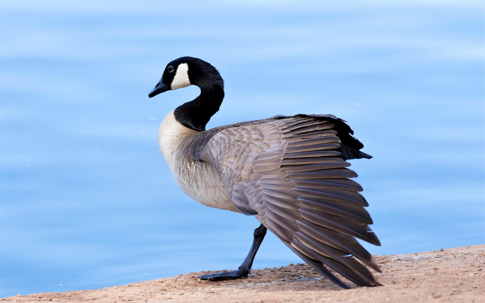

Life of Canada Goose

The Canada goose (Branta canadensis), sometimes called Canadian goose,[2][3] is a large wild goose with a black head and neck, white cheeks, white under its chin, and a brown body. It is native to the arctic and temperate regions of North America, and it is occasionally found during migration across the Atlantic in northern Europe. It has been introduced to the United Kingdom, Ireland, Finland, Sweden, Denmark, New Zealand, Japan, Chile, Argentina, and the Falkland Islands.[4] Like most geese, the Canada goose is primarily herbivorous and normally migratory; often found on or close to fresh water, the Canada goose is also common in brackish marshes, estuaries, and lagoons.
Facts about Canada Goose
- The female is called a goose and the male is a gander. The young are know as goslings.
- They form flocks to fly south for the winter.
- The Canada goose has webbed feet for swimming.
- A group of geese has many collective nouns, including a "flock", "chevron", and "string" of geese.